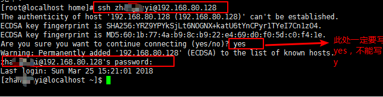

ssh服务器搭建
ssh服务器的主要功能就是：远程登录全权操作主机
ssh服务器的搭建我们这里选择使用openssh-server工具
其搭建基本流程是：
0x00 server工具安装
不同linux发行版的安装方式不同
Debian/Ubuntu系列安装方式
# apt-get安装
$sudo apt-get install openssh-server
RedHat/Fedra/CentOs系列安装方式
# yum安装
$yum install openssh-server
0x01 远程登陆
登录方式很简单：ssh UserName@ServerIp

0x02 连接操作
ssh远程登录后所能做的操作包括远程主机支持的所有本地操作